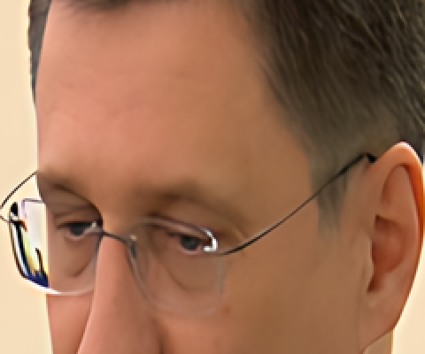
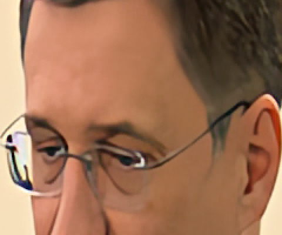

Live-action AI upscalers as add-ons, and AI strength
upscale-general(11 MB): Real-ESRGAN General (realesr-general-x4v3, plus its denoise variant-wdn-; BSD-3-Clause, converted here) and Live Action SPAN (jcj83429's2xLiveActionV1_SPAN, Apache-2.0, upstream's own ONNX).upscale-esrgan-plus(134 MB): Real-ESRGAN x4plus / x2plus (BSD-3-Clause, converted here).
1. Converting Real-ESRGAN's checkpoints
Upstream (xinntao/Real-ESRGAN) publishes
these models only as PyTorch .pth. Scripts/models/convert_realesrgan.py
transcribes the two architectures (SRVGGNetCompact; RRDBNet with 23 blocks), loads each checkpoint
(pinned by URL and SHA-256) and exports ONNX in the shape VSNCNN already runs: one
input, one output, float32 NCHW RGB, batch/height/width dynamic, opset 13,
IR 7 — vs-mlrt's own conversions use the same. Two details:
- x2plus starts with
pixel_unshuffle(2), which the TorchScript exporter writes as a 6-D Reshape/Transpose that ncnn's importer can't handle. It is replaced by a stride-2 convolution with one-hot weights, checkedtorch.equaltoF.pixel_unshuffleon every run (each output is one input sample times 1.0). - With torch 2.15.0 / onnx 1.23.2, two runs produce byte-identical files (the hashes the manifests pin).
| Model | ONNX bytes | ops | PyTorch vs ORT, random image (max, levels) | smooth image (max) |
|---|---|---|---|---|
| realesr-general-x4v3 | 4,866,424 | Conv PRelu DepthToSpace Resize Add | 0.0012 | 0.0069 |
| realesr-general-wdn-x4v3 | 4,866,424 | same | 0.0056 | 0.0089 |
| RealESRGAN_x4plus | 67,051,646 | Conv LeakyRelu Concat Mul Add Resize | 0.0006 | 0.0171 |
| RealESRGAN_x2plus | 67,073,184 | same (unshuffle as Conv) | 0.0006 | 0.0118 |
In 8-bit levels (255 × the 0..1 difference); 96x128 inputs, seeded. Printed by the conversion script itself.
2. VSNCNN against ONNX Runtime
The same 320x240 frame of small_clip.mp4 through VSNCNN (as the template runs it)
and through ONNX Runtime on the CPU in fp32. fp32 shows the conversion and ncnn's import are exact;
fp16 is what the template uses (as for the bundled models, ~3x faster).
| Model | fp32 max | fp16 max | fp16 mean | fp16 99.9th pct |
|---|---|---|---|---|
| Real-ESRGAN General | 0.001 | 2.349 | 0.046 | 0.726 |
| Real-ESRGAN General denoise | 0.012 | 10.281 | 0.112 | 2.256 |
| Live Action SPAN | 0.000 | 1.447 | 0.052 | 0.662 |
| Real-ESRGAN x2plus | 0.001 | 1.946 | 0.112 | 1.111 |
| Real-ESRGAN x4plus | 0.005 | 5.142 | 0.122 | 1.433 |
| (bundled) Real-ESRGAN anime 4x | 0.000 | 3.006 | 0.030 | 0.512 |
run.sh parity. Both clipped to 0..1 first, as the template's
conversion back does. The fp16 maxima are single pixels at hard edges; the mean is what a viewer
sees. The bundled anime model is the reference for what VSNCNN's fp16 already does in shipped
builds.
3. Fidelity, colour and position
3a. Restoring a downscaled broadcast frame (PSNR)
A 720x576 DVB-T frame (pal-dvbt-fieldcoded-25i.ts, bwdif) is the ground truth; its
360x288 bicubic downscale is upscaled 2x by each method. PSNR rewards
softness: the source is itself an H.264 broadcast, and a model that removes its compression
noise or redraws texture scores lower. Read this as fidelity to the source, not as
"which looks better" — and it is one frame.
| Method | PSNR | mean abs (levels) |
|---|---|---|
| Spline36 | 30.99 | 1.77 |
| Real-ESRGAN General 4x, then Spline36 to 2x (shipped) | 27.75 | 3.74 |
| General 4x, then Lanczos to 2x | 27.70 | 3.75 |
| General 4x, then Bicubic to 2x | 27.89 | 3.70 |
| General 4x, then Bilinear to 2x | 28.40 | 3.57 |
| General denoise 4x, Spline36 to 2x | 28.31 | 3.00 |
| Live Action SPAN 2x | 32.04 | 2.01 |
| Real-ESRGAN x2plus 2x (shipped for 2x) | 27.22 | 3.73 |
| Real-ESRGAN x4plus 4x, Spline36 to 2x | 28.60 | 3.58 |
| (bundled) Real-ESRGAN anime 2x | 27.42 | 4.83 |
| (bundled) Real-CUGAN conservative 2x | 30.55 | 2.52 |
run.sh psnr, 8-pixel border excluded.
General at 2x. The network is 4x only. Running it at 4x and resampling down is
what upstream's own --outscale does (with Lanczos). The downscale kernel moves PSNR by
under 0.7 dB, and in the order of their softness (bilinear best), which is PSNR preferring blur
rather than a reason to pick bilinear. The pipeline's own kernel, Spline36, was kept: it sits next
to Lanczos (0.05 dB apart). The resample runs in float RGB, before the conversion back to the
source format ({{#AI_RESAMPLE}}).
Live Action SPAN is the only AI method here that beats Spline36 on PSNR: it was trained to repair compression, blur and halos without denoising or shifting colour, and it does what it says. Its author notes it "generally cannot handle VHS degradation" — the method description in the app says so.
3b. Crops
240x200 from the frame (face, glasses, hair), shown 2x with nearest-neighbour scaling so pixels are real. Click for full size.






3c. Colour and position on the synthetic pattern
The pattern of integration_ai_upscale_test.dart (six mid-saturation patches and a
white bar on grey, 320x240, encoded through the whole pipeline to FFV1) against a Spline36 upscale
of the same frames. Worst channel of the worst patch, and the bar's centre.
| Method | Flat colour drift (levels) | Bar centre offset (px, x / y) | Test bound |
|---|---|---|---|
| Real-ESRGAN General 2x | 2.9 | 0.10 / 0.03 | 4.0 |
| Real-ESRGAN General 4x | 2.9 | 0.29 / 0.09 | 4.0 |
| Live Action SPAN 2x | 0.6 | 0.03 / 0.02 | 1.5 |
| Live Action SPAN 4x (twice) | 1.3 | 0.11 / 0.06 | 2.0 |
| Real-ESRGAN x2plus | 4.2 | 0.13 / 0.22 | 6.0 |
| Real-ESRGAN x4plus | 12.2 | 0.27 / 0.11 | 14.0 |
| (bundled) Real-ESRGAN anime 4x | 11.2 | — | 14.0 |
| AI strength 0.5, anime Real-ESRGAN 4x | 5.8 | — | half ±1 |
From flutter test test/integration_ai_upscale_test.dart (heavy) with
VAPOURBOX_EXPECT_VULKAN=1, which prints every value. Every bar centre is within 0.3
px of Spline36's (the test allows 0.75 px). General's 2x and 4x patches are identical: its 2x is the
same 4x network, resampled. x4plus's tint is the model's, as with the anime Real-ESRGAN: the
pipeline is shared with CUGAN and AnimeJaNai, which keep flat colour within 2 and 0.5 levels.
3d. AI strength
aiStrength below 1 adds one std.Merge of a Spline36 upscale of the
source frame with the network's result, at the clip's own format, before the frame properties are
copied back. At strength 0.5 the result is within 0.38 levels (mean) of the
per-pixel mid-point of the two, and the anime Real-ESRGAN 4x tint falls from 11.2 to 5.8 levels.
At 1.0 (the default) the block is removed: the script is byte-for-byte the one a job without the
setting produces (test_187).
4. 2xVHS2HD (RealPLKSR): rejected
starinspace/StarinspaceUpscale's
2xVHS2HD-RealPLKSR.onnx (release tag Models, 29,722,757 bytes, SHA-256
2b7ec70d…c826; CC BY-SA 4.0; upstream names no author other than the account) is
exported with dynamic shapes and in-place slice assignment (RealPLKSR's partial large-kernel
convolution, x[:, :idx] = conv(x[:, :idx])). ncnn's ONNX importer, inside VSNCNN,
rejects it at load:
225 Shape not supported yet!
84 Expand not supported yet!
56 Where not supported yet!
56 Range not supported yet!
56 Equal not supported yet!
56 ConstantOfShape not supported yet!
56 Cast not supported yet!
28 ScatterND not supported yet!
1 Tile not supported yet!
1 layer Shape not exists or registered
vapoursynth.Error: operator(): load param failed
run.sh vhs2hd. Counted import messages; the job fails with
operator(): load param failed.
So it was not built, and no add-on was made. A re-export from the published .pth
with concatenation instead of slice assignment and static shape handling might import; that is a
conversion of a CC BY-SA model (the result would be an adaptation under the same licence) and was
not attempted.
5. Speed and GPU memory
| 720x576 source, 10 frames | fps, run.sh fps (GPU shared) | fps, first run (machine quiet) |
|---|---|---|
| (bundled) Real-ESRGAN anime 2x | 5.07 | 8.3 |
| (bundled) Real-CUGAN 2x | 3.51 | 4.8 |
| Real-ESRGAN General 2x (4x, then resample) | 2.69 | 4.0 |
| Real-ESRGAN General 4x | 2.83 | 3.9 |
| Live Action SPAN 2x | 3.80 | 8.9 |
| Live Action SPAN 4x (twice) | 0.86 | 1.5 |
| Real-ESRGAN x2plus 2x | 0.45 | 0.9 |
| Real-ESRGAN x4plus 4x (384 tiles) | 0.08 | 0.15 |
run.sh fps: fp16, num_streams=2, whole frames except
x4plus — the template's settings for an SD source. Network time only (no decode or encode). One
machine: an M1 Pro's GPU through MoltenVK; Windows and Linux GPUs will differ, and lavapipe on the CI
runners is far slower. The committed-script run shared the GPU with other
jobs (another agent's Core ML work); the first column is that run. The second is the same
measurement made earlier the same day, through a scratch copy of these scripts, on a quiet machine —
kept here because it is the better estimate of real speed. Ratios between methods agree.
Real-ESRGAN x4plus needs tiles at any size
| Configuration (4 frames) | Result |
|---|---|
| x4plus, whole frame | segfault after vkWaitForFences failed -4 (device lost) |
| x4plus, 512 tiles, 2 streams | 0.01 fps (632 s for 4 frames: thrashing) |
| x4plus, 512 tiles, 1 stream | 0.05 fps |
| x4plus, 384 tiles, 2 streams | 0.12 fps (fastest) |
| x4plus, 384 tiles, 1 stream | 0.09 fps |
| x4plus, 256 tiles, 2 / 1 streams | 0.10 / 0.06 fps |
| x4plus, 192 / 128 tiles | 0.07 / 0.07 fps |
| x2plus, whole frame, 2 / 1 streams | 0.79 / 0.38 fps |
| x2plus, 512 / 256 tiles | 0.32 / 0.27 fps |
| General on 360x288, 384 tile as given (larger than the frame) | segfault |
| General on 360x288, tile clamped to the frame | runs (10.6 fps) |
run.sh tiles. "tile=0" is the whole frame.
Whole-frame x4plus at 720x576 lost the Vulkan device
(vkWaitForFences failed -4, VK_ERROR_DEVICE_LOST, then a segfault) — its
last layers run 64 channels at 2880x2304. 512-pixel tiles ran but thrashed; 384 is fastest. So
x4plus at 4x always runs in 384-pixel tiles (CropResizeParameters::ai_tiling) whenever the frame is above 384x384. x2plus works at a quarter of the area until its last layers and runs a DVD frame whole,
so it keeps the common rule (512 tiles above SD).
run.sh psnr passed x4plus's 384 tile to a
360x288 frame and crashed. The template only tiles above an area threshold, but a wide, short picture
passes the area test while being shorter than a tile (800x200 for x4plus; any frame above 720x576 in
area but under 512 lines for every AI method, the bundled ones included). Tiles are now
min(tile, width/height) in both templates, and the heavy suite runs x4plus 4x on an
800x200 source.6. Decisions
- Two add-ons, not five. General and SPAN are small (11 MB together) and both for real-world footage; x4plus/x2plus are 134 MB and slow, so they are their own download.
- VSNCNN, not ONNX Runtime. All four architectures import into ncnn and run
exactly, on the same GPU path as the bundled models, so the add-ons need no
ai-runtimeand are offered exactly where VSNCNN ships (macOS arm64, Windows x64, Linux x64; asserted). - Factor rules: General runs 4x and resamples for 2x (as upstream); SPAN runs twice for 4x; x2plus / x4plus by factor (x2plus is 4x faster than x4plus-then-downscale).
- The denoise variant is a switch on General, not a method: same network, different weights, 4.9 MB.
- AI strength is one control for every AI method, 0–1 in 0.05 steps.
- Not gated to advanced mode. The four-methods-in-simple-mode rule applies to a
schema's
methods; the upscaler is an enum parameter, and the schema has no per-option advanced flag. The x4plus option's label says "slow".
7. Not tested here
- Windows (DirectX/Vulkan drivers) and Linux GPUs; the CI nightly runs the heavy suite on lavapipe. x4plus's tile size was chosen on a 16 GB unified-memory Mac; a discrete GPU with less memory may want smaller tiles.
- Real VHS, film scans and noisy low-light video — the quality comparison is one broadcast frame and a synthetic pattern.
- The hosted files: until the owner uploads them to
addon-models-v1, every test ran throughVAPOURBOX_ADDON_MIRROR, which checks the same sizes and hashes.